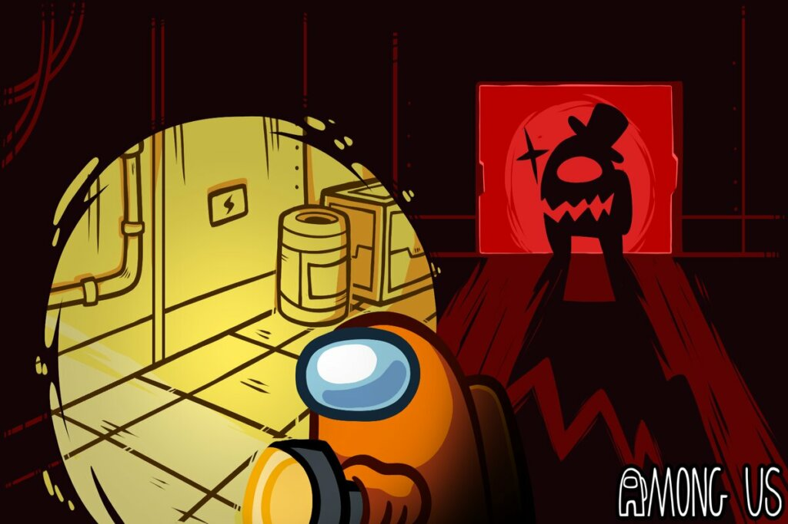

Tripulante? Outra vez?

Muitos jogadores não gostam de jogar de tripulante por ser "chato" e de certa forma estão certos, jogar no papel do impostor traz muito mais emoção e adrenalina.
O grande problema é que a maioria não se lembra de como jogar de impostor pode ser igualmente chato, claro o fato do papel do impostor ser mais raro o torna mais difícil de enjoar.
Mas é fato que os jogadores não tentam aproveitar suas partidas de tripulante, já que "queriam ser impostor".
Bem, a estratégia para vencer de tripulante não difere muito da de impostor, mas a chave dessa diferença são as pessoas, como tripulante você tem que lidar muito mais com as pessoas.
E por óbvio, a dúvida sobre quem é o impostor que pode lhe assassinar a qualquer momento não ajuda muito.
Mas se mantenha firme, faça suas tasks, dialogue com os outros e encontre o impostor, ele quase sempre deixa algum erro em seu álibi e um bom tripulante é aquele que acha esse erro.
Dito isso, Boa Sorte: Tripulante